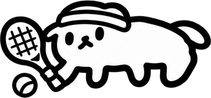
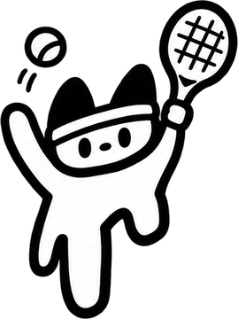
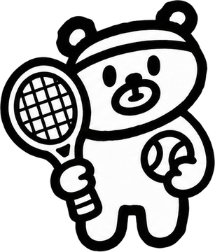

サーブの動画をえらんでね！
1〜2 本、10〜15 秒くらいがちょうどいいよ。
動画を選ぶ
動画はこの端末の中だけで解析します。どこにも送信・保存されません。
うまく読み取れる撮り方
- スマホを固定して、真横（ベースラインの延長）か真後ろから撮り、動画の下の「向き」を合わせる
- 膝の曲がりを見たいときは後ろから。横からだと膝がカメラの方へ曲がるので、浅く見える
- スマホは縦向きにして、頭の上に伸ばした腕から足元まで全身を入れる
- フラット・スライス・スピンは別々の動画に撮り、動画の下の「種類」を選ぶ
- 打点の位置は、前後は横から、左右は後ろからの動画で分かる
- 映るのは 1 人だけにする
- 明るい場所で、体と背景の色がはっきり分かれるようにする
- できればスロー撮影にすると、速い腕の動きも読み取りやすい
サーブの動きを自動では見つけられませんでした。インパクトの瞬間までコマ送りして、動画の下の「ここをインパクトにする」を押してください。
A と B の違い
A B 丸印は利き手の手首
重ねた図は、足元の位置と体の高さをそろえています。差が 10°、0.05 倍、5% 以上の項目を「はっきり違う」としています。
フォームのチェック

「プロ」は 2024 年全米オープンの選手約 100 人の値で、かっこ内は半数の選手が入る範囲です。中継映像からの推定なので、目安として見てください。目安の数値は、このプロの値にゆとりを足して決めています。
プロの値の出典：Wang ほか「Large-Scale 3D Pose Estimation of Professional Tennis Serves from Broadcast Video」（2026、CC BY 4.0）のデータを集計。
角度の数値
A —
B —
グラフをなぞると、その位置に動画が移動します。